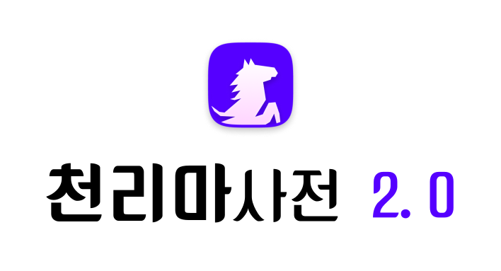

hanja.txt を自動で読み込めませんでした（ブラウザがファイルを直接開いている場合に起こります）。hanja.txt を選択してください。

翻訳等では正確な情報が表示されない場合があります。ご了承ください。利用規約と個人情報保護方針を必ずご確認ください。
hanja.txt を自動で読み込めませんでした（ブラウザがファイルを直接開いている場合に起こります）。hanja.txt を選択してください。
ejdict-hand-utf8.txt を自動で読み込めませんでした。HTMLと同じフォルダーに置くか、ここから辞書ファイルを選択してください。
英単語を入力すると、日本語の意味を検索します。
日本語の見出し語を入力してください。
漢字項目のブックマークと、各辞書で保存した検索結果をJSON形式で管理します。
インストール可能な環境では、ここからホーム画面に追加できます。